Day by day
Tap a date to open that day — each is self-contained: plan, transport, budget, Shred notes, plus an eatery guide, shopping guide, and “also here” ideas for that location if plans shift. Self-run days (★) are timed precisely; tour-day times are typical flow.
Mumbai → the sky
The overnight redeye via Hong Kong. Tonight’s only job is sleep.
Reach BOM Terminal 2
Three hours before an international long-haul — Mumbai evening traffic is unpredictable. Eat a proper high-protein meal here before boarding.
▶ watchDepart Cathay Pacific (via Hong Kong)
Set your watch to JST (+3.5h) and try to sleep on Japan’s clock. Skip the plane alcohol; hydrate hard. Lands Tokyo Haneda 13:55 on the 18th.
▶ watchLand Haneda → Tokyo Drift night
In at 13:55, settle, then ride shotgun in a JDM legend through Tokyo’s expressways and neon — Fast & Furious style.
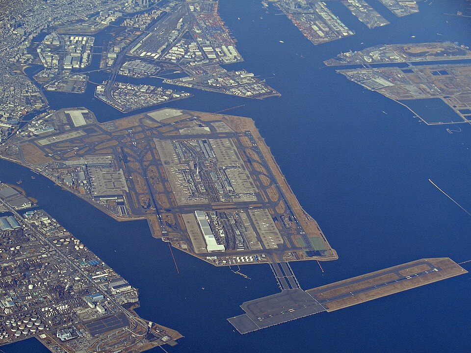
Land Tokyo HanedaLand Tokyo Haneda
Visit Japan Web QR = faster immigration. Out by ~14:45. Activate your eSIM on landing.
▶ watch Check into APA Kabukicho Tower
Check into APA Kabukicho TowerCheck into APA Kabukicho Tower
In the middle of Kabukicho — Haneda limousine bus or monorail+JR, ~1h. Compact room, but the big communal bath + sauna is the redeye reset. The JDM pickup and the neon are both on your doorstep.
▶ watch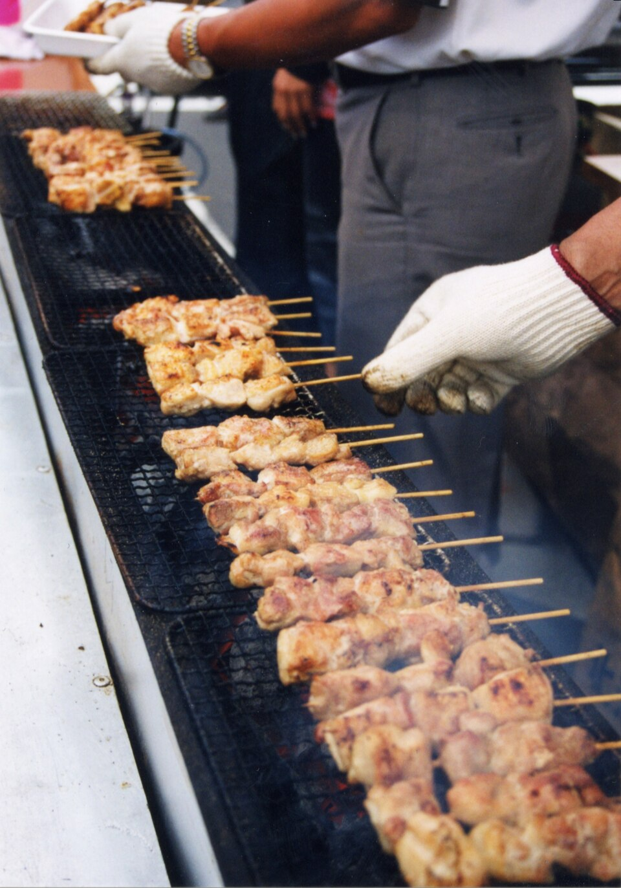
Easy Shred dinnerEarly Shred dinner
A protein-forward dinner near APA before the 18:50 pickup — grilled fish or yakitori, kept quick.
▶ watch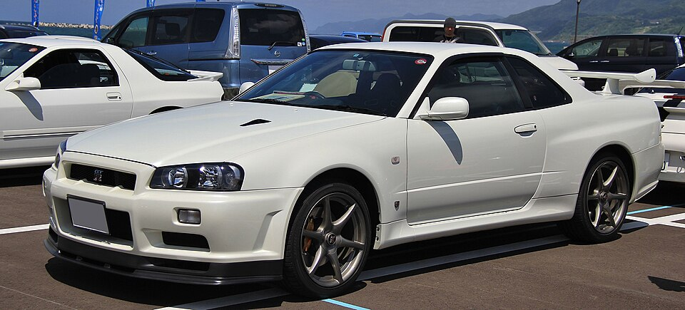
Fast & Furious Tokyo Drift IIIFast & Furious Tokyo Drift III
Ride shotgun (no licence needed) in a JDM icon — Skyline, GTR, Silvia — along the Wangan/C1 expressways, tunnels, Rainbow Bridge, past Tokyo Tower & Shibuya, to the Daikoku PA car meet. ~3–4h, hotel drop-off. Book ahead (free cancel 24h).
▶ watch- Omoide Yokocho area, ShinjukuLantern-lit yakitori alleys near Shinjuku Station's west exit — the quintessential smoky Tokyo eating experience if you want food before the drive.
- AFURI (Ebisu / Shinjuku)Famous yuzu-shio ramen, light and citrusy — order at the vending machine, counter seating, open very late.
- Konbini dinner7-Eleven / Lawson salad chicken + onigiri if you just want something fast and clean before the night drive.
- Don Quijote (Shibuya/Shinjuku)Sprawling discount megastore, open late — snacks, quirky gifts, travel bits if you need anything on night one.
- Bic Camera / YodobashiVast electronics if you want to scope cameras/DJ gear early (though save big buys for Osaka to avoid carrying them).
- Shibuya SkyOpen-air rooftop observation deck over the Scramble — stunning at dusk if the drive falls through or you want more.
- Go-karting through ShibuyaStreet-legal karts in costume past the Crossing — needs an IDP, which you don't have, but good to know it exists.
- ShimokitazawaVintage/record-digging hipster district, a few stops away — great for the DJ side if you have a spare evening.
- teamLab Planets (Toyosu)If you'd rather swap the drive — immersive digital-art walk, book ahead.
Kamakura coast + Yokohama — Klook day tour
A booked coach day: Enoshima, the Slam Dunk crossing, Hachimangū, then Yokohama's Red Brick harbour lit up at night. Zero navigation the day after Daikoku.
Klook pickup — Shinjuku
Early start (exact time + point on your voucher — choose the Shinjuku pickup, near APA). Konbini breakfast in hand; nap on the coach.
▶ watch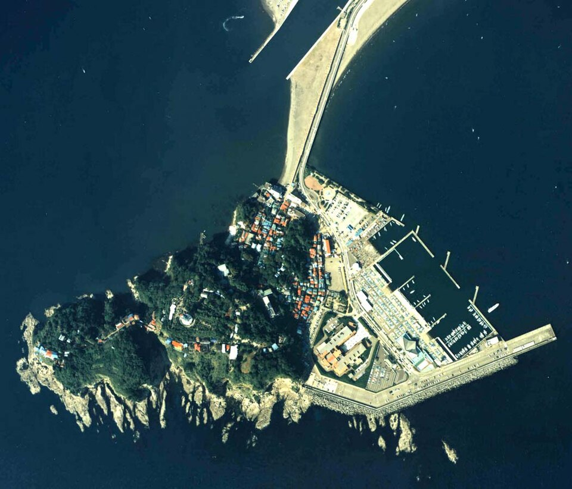
Enoshima islandEnoshima island
Shrine, garden and Sea Candle time on the island — lunch here (own expense): grilled seafood stalls up the approach street.
▶ watch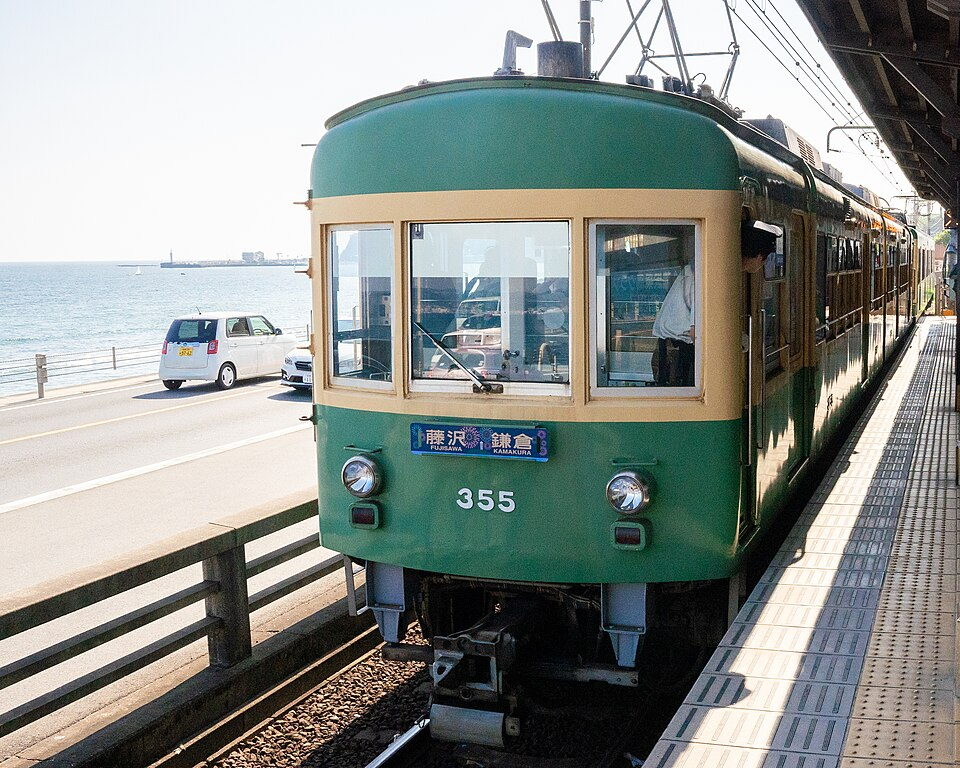
Kamakura High School crossingKamakura High School crossing
The Slam Dunk railroad crossing photo stop — Enoden trains against the sea. Sunday crowd at the famous gate; patience gets the shot.
▶ watch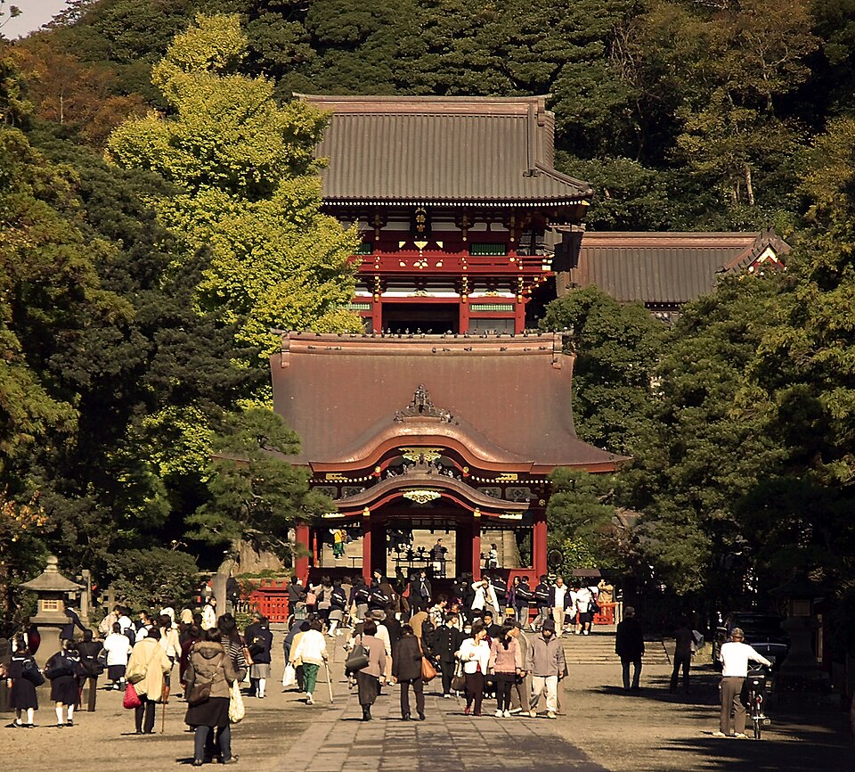
Tsurugaoka Hachimangū + Komachi-dōriTsurugaoka Hachimangū + Komachi-dōri
Kamakura's grand samurai-era shrine, then free time on the snack street — shirasu-don if you skipped a proper lunch.
▶ watchYokohama Red Brick — night view
The harbour finale: Red Brick Warehouse, Minato Mirai skyline lighting up — the same bay you flew past at Daikoku, now from the shore. Back to Shinjuku ~20:30–21:00.
▶ watch- Shirasu-don on Komachi-doriKamakura's signature whitebait rice bowl — light and local. Many small shops along the main street.
- Enoshima grilled seafood stallsGrilled squid-on-a-stick, sazae (turban shell), shirasu dishes along the island's Benzaiten approach.
- Hato Sabure & Kamakura sweetsDove-shaped shortbread is the classic local omiyage; Komachi-dori is full of matcha soft-serve and snacks.
- Komachi-doriKamakura's main shopping street — ~250 shops of crafts, snacks, souvenirs, ceramics.
- Enoshima Benzaiten NakamiseIsland souvenir/food street up to the shrine — shells, sweets, trinkets.
- Hokoku-ji (Bamboo Temple)A quieter bamboo grove with a matcha tea house — lovely, less crowded than Arashiyama's, gentle/flat.
- Hase-dera TempleHillside temple near the Great Buddha with sea views and gardens — knee-friendly, beautiful.
- Yuigahama BeachCoastal stroll and sea air; Mt Fuji on the horizon on a clear afternoon.
- Enoden whole line to FujisawaRide the retro coastal train end-to-end if you just want the scenery.
teamLab → welcome night
Day 1 is free till the 18:30 meet — so it's teamLab at noon, an airsoft range in Asakusa, and the Skytree deck before the group forms.
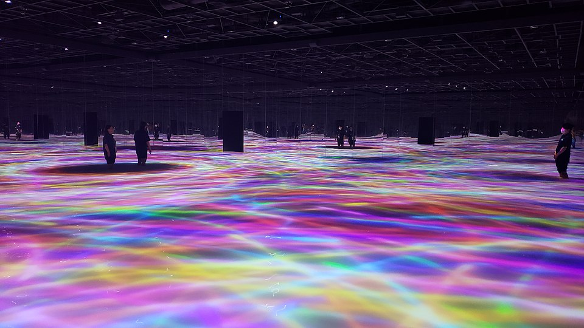
teamLab Planets (Toyosu)teamLab Planets (Toyosu)
The booked noon slot. Barefoot, knee-deep water, immersive digital art — ~2h, no rush once inside. Konbini lunch after.
▶ watchShred lunch near Toyosu
Toyosu Market area has great seafood — sashimi/grilled protein, your kind of meal.
▶ watchAsakusa airsoft range
An hour of indoor target shooting at one of the Asakusa/Kuramae ranges — walk-in, ~¥2,000–3,000, staff coach you through the rentals. The adrenaline slot of the day.
▶ watchTokyo Skytree deck
One stop from Asakusa (or a 15-min walk over the river): the 350m Tembo Deck over the whole Kanto plain — the deck box, ticked. Down by ~17:00, Ginza line to Ueno.
▶ watchSpirit welcome — meet the group 18:30
Check out of APA ~09:00-10:00 and drop bags at GRIDS Ueno before heading to Toyosu. Back at GRIDS ~17:30 to check in and shower — Tru Leader, group and welcome dinner from 18:30.
▶ watch- Toyosu Market sushiFresh sushi/sashimi breakfast or lunch near teamLab Planets — the successor to Tsukiji's inner market.
- Tsukiji Outer MarketStill-buzzing stalls — tamagoyaki, grilled seafood, tuna bowls; great for grazing.
- Welcome-dinner izakayaYour group dinner — wherever the Tru Leader picks; lean into the shared plates and meet everyone.
- Toyosu / Odaiba (near Planets)teamLab Planets sits in Toyosu; Odaiba's malls (DiverCity, the giant Gundam) are one stop if you have time.
- LaLaport ToyosuBig family mall near Planets if you need anything practical.
- teamLab Borderless (Azabudai)The other, larger teamLab — a wander-freely maze; do this instead if you want a longer art session.
- OdaibaBayside district — the Gundam statue, Rainbow Bridge views, malls; easy and flat.
- Tokyo skyline at nightIf the welcome dinner ends early, the city's lit up — Shibuya Sky or the free Tokyo Metropolitan Gov't observatory.
Tokyo — temples & sake
Walking tour, Senso-ji, Akihabara’s electric chaos, a sake tasting, then Shinjuku by night.
Group walking tour
Your Tru Leader orients the group on the city and transit — practical and social.
▶ watch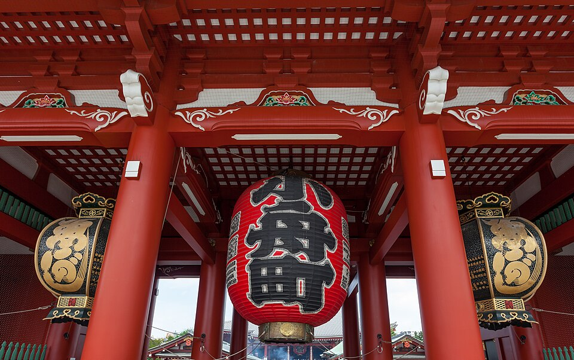
Senso-ji (Asakusa)Senso-ji (Asakusa)
Tokyo’s oldest temple — the Kaminarimon thunder gate, Nakamise-dori stalls, the five-story pagoda.
▶ watch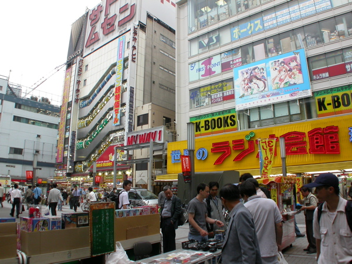
Akihabara — Electric TownAkihabara — Electric Town
Multi-floor electronics, anime/manga, retro gaming, gachapon. Browse what interests you in the free pockets.
▶ watch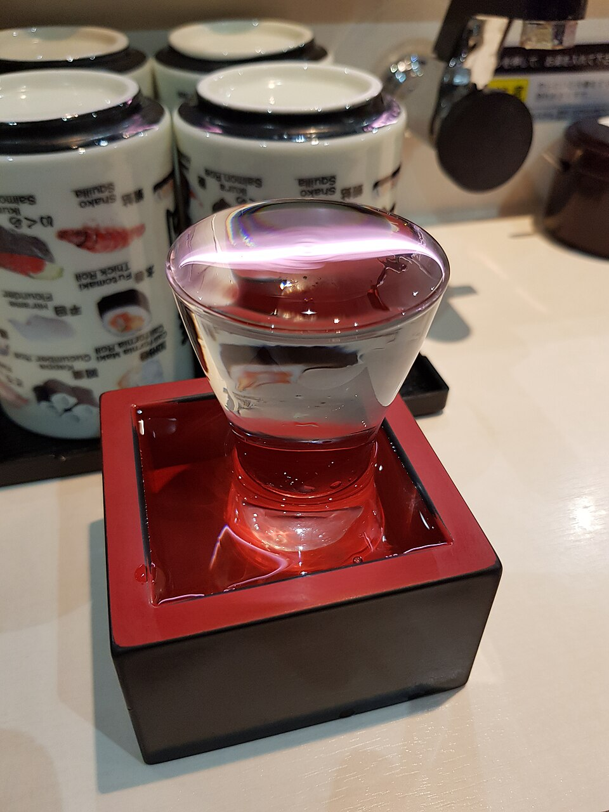
Sake tastingSake tasting
Sample several styles and learn the basics of Japan’s rice wine. One of your 18 included activities.
▶ watch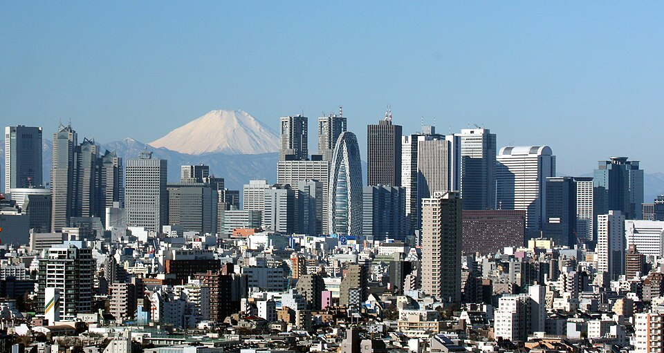
Shinjuku by nightShinjuku by night
Neon, screens, the quintessential Tokyo night. Loosely structured — explore at your pace.
▶ watch- Asakusa old-Edo eatsTempura, unagi, and soba at century-old shops around Senso-ji — the traditional side of Tokyo dining.
- Akihabara themed & ramenMaid cafés, gachapon, and solid ramen/curry counters between the electronics floors.
- Kura/Uobei conveyor sushiFun, cheap conveyor-belt sushi (~¥150/plate) — order by tablet; great solo.
- Akihabara Electric TownMulti-floor electronics, retro games, anime, cameras, audio/DJ gear — tax-free at the big stores.
- Nakamise-dori (Asakusa)Traditional snack and souvenir stalls on the temple approach — fans, yukata, crafts.
- Don Quijote AkihabaraThe discount giant, open late.
- Tokyo SkytreeThe tallest tower — observation decks + Solamachi mall, near Asakusa across the river.
- Ueno (Ameyoko + museums)Market street and Japan's best museum cluster, one stop from Asakusa — flat, easy.
- Kappabashi 'Kitchen Town'Streets of knife shops and plastic-food samples — a quirky, knee-friendly browse near Asakusa.
Meiji Shrine → Golden Gai
Forest-shrine calm, Harajuku colour, then two of Tokyo’s great nightlife institutions to close the city.
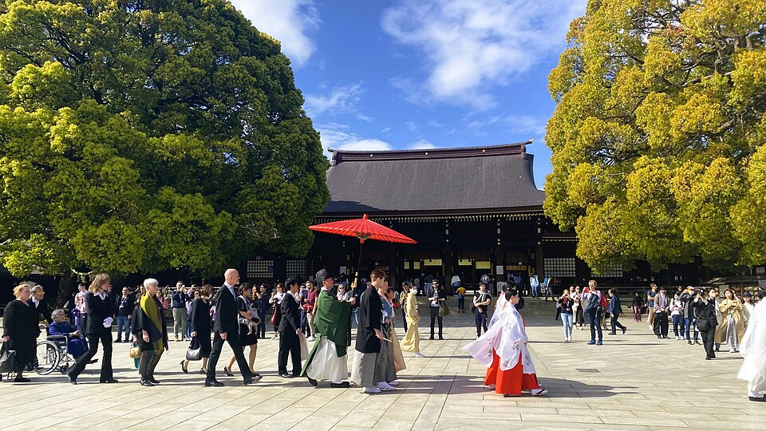
Meiji Shrine + Yoyogi ParkMeiji Shrine + Yoyogi Park
A serene forest of ~100,000 trees in the city’s heart; giant torii gates over gravel paths. Weekend Shinto weddings are a lovely sight.
▶ watch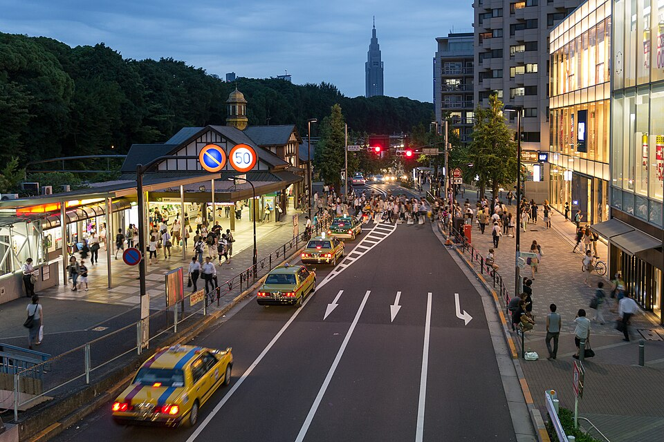
Harajuku / Takeshita-DoriHarajuku / Takeshita-Dori
Youth fashion, crêpes, quirky shops, a riot of colour. Self-paced — good free time. Shibuya record shops are one stop away.
▶ watch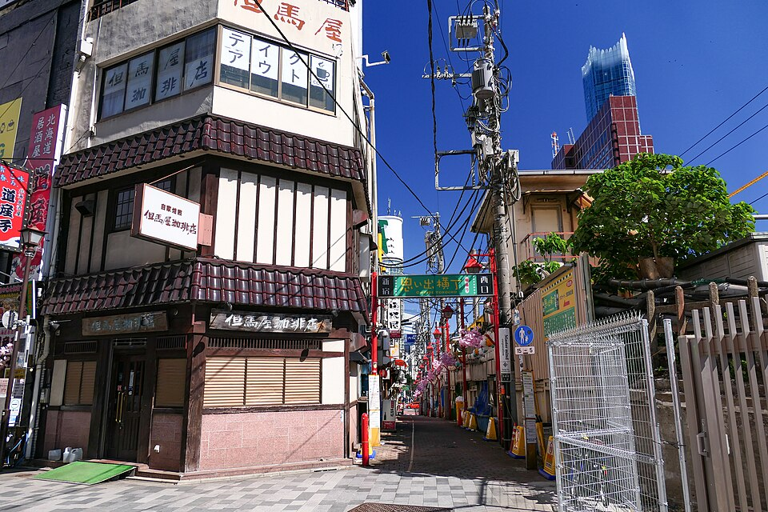
Omoide YokochoOmoide Yokocho
A lantern-lit alley of tiny yakitori counters — smoky, cramped, wonderfully old-school. A genuinely good Shred protein night.
▶ watch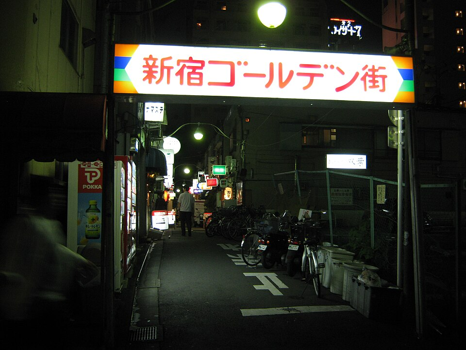
Golden Gai (+ karaoke)Golden Gai (+ karaoke)
A warren of six alleys packed with ~200 minuscule themed bars. Intimate, characterful. Carry cash — many are cash-only with small covers.
▶ watch- Omoide Yokocho yakitoriThe smoky lantern alley by Shinjuku Station — grilled skewers and beer, the classic experience (the tour eats here).
- Harajuku street snacksTakeshita-dori crepes, cotton candy, rainbow everything — the fun, indulgent side.
- Ebisu yokochoOne stop south — a livelier-than-it-looks alley of tiny bars and quality small plates, more local than Shibuya.
- Takeshita-dori (Harajuku)Youth-fashion epicentre — quirky boutiques, vintage, kawaii goods.
- Omotesando / Ura-HarajukuUpscale boulevard + cool indie backstreets (Ura-Hara) — streetwear and design.
- Shibuya record shopsDisk Union, Face Records, HMV — one stop from Harajuku; the vinyl dig for the DJ kit.
- Shibuya SkyThe rooftop deck — sunset over the Scramble, a photo highlight.
- Meiji Jingu inner gardenA serene paid garden inside the shrine forest — irises peak in June/July.
- ShimokitazawaRecords, vintage, indie cafés — the laid-back music neighbourhood, a couple of stops away.
Hakone — Fuji & the lake
A long travel day rewarded with a castle, ropeway, a pirate-ship cruise, and maybe Mt Fuji.
Travel to Odawara / Hakone
A long transit morning — rest after Golden Gai. The city gives way to mountains.
▶ watch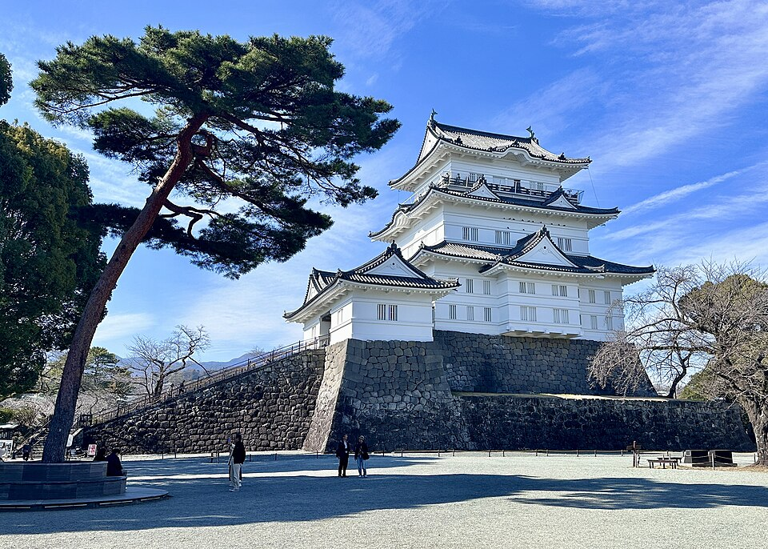
Odawara CastleOdawara Castle
A handsome reconstructed feudal castle and grounds — a good stretch-your-legs stop and photo spot.
▶ watch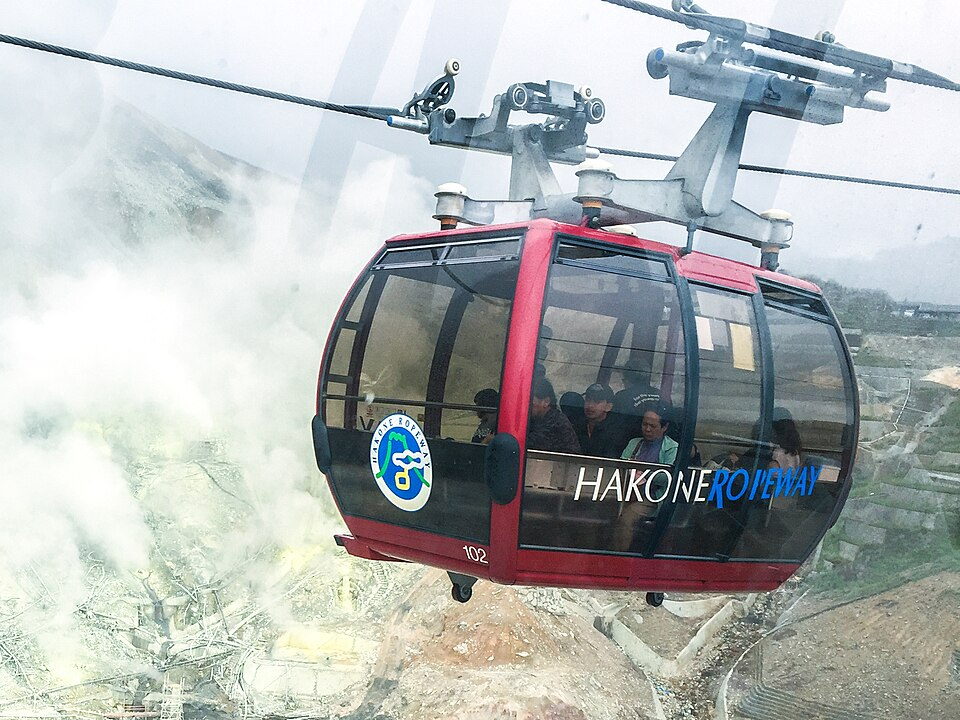
Hakone Ropeway + OwakudaniHakone Ropeway + Owakudani
An aerial gondola over the volcanic valley with its steam vents — and, weather permitting, Fuji. Owakudani’s black eggs add 7 years of life, they say.
▶ watch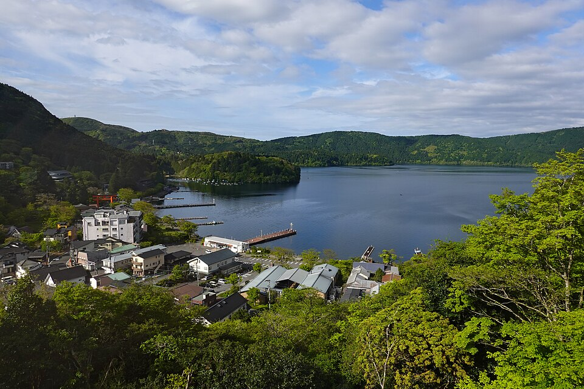
Lake Ashi pirate-ship cruiseLake Ashi pirate-ship cruise
The day’s centrepiece — a cruise past the Hakone Shrine’s red torii standing in the water, Fuji behind on a clear day.
▶ watchOnsen town evening
Hakone is famous onsen country — likely a hot-spring soak and accommodation.
▶ watch- Owakudani black eggsEggs boiled black in the volcanic springs — said to add 7 years of life; a fun novelty stop on the ropeway.
- Hakone soba / set mealsMountain soba and onsen-town kaiseki-style sets — fish-forward, seasonal.
- Lakeside cafés (Lake Ashi)Coffee with a torii-and-lake view around Moto-Hakone.
- Hakone-Yumoto shopsThe hot-spring town's main street — onsen manju, woodcraft (yosegi marquetry), souvenirs.
- Owakudani souvenir hallBlack-egg themed goods and local snacks at the ropeway station.
- Hakone Open-Air MuseumWorld-class sculpture park in the mountains — Picasso pavilion, Henry Moore; mostly flat paths.
- Hakone Shrine lakeside toriiThe famous red gate standing in Lake Ashi — iconic photo, gentle walk.
- Pola Museum of ArtImpressionist collection in a forest setting — a calm, knee-friendly alternative.
Kyoto — tea & ten-thousand gates
The old capital: a tea ceremony, the Ninenzaka lanes, Fushimi-Inari’s torii — and Gion Matsuri in the air.
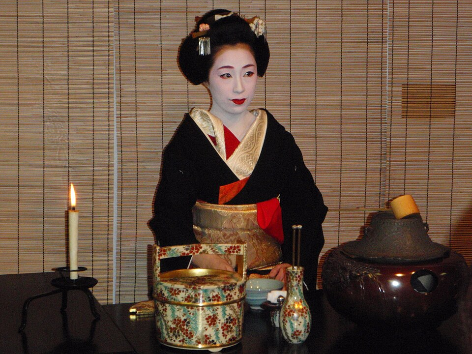
Traditional tea ceremonyTraditional tea ceremony
The ritual, etiquette and meaning of preparing matcha — calm and immersive. Included.
▶ watch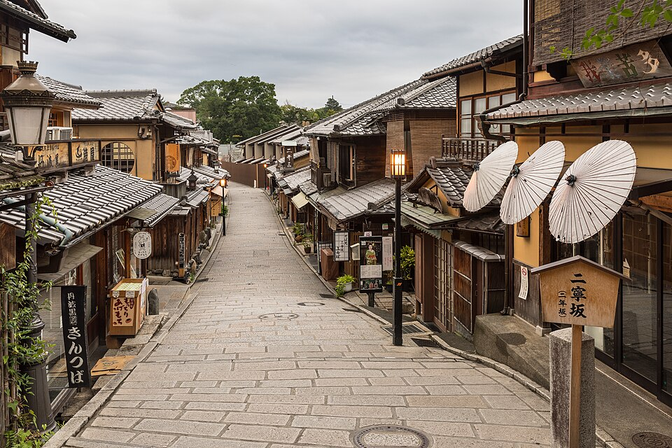
Ninenzaka old townNinenzaka old town
Preserved stone-paved lanes of wooden machiya, teahouses and the Yasaka Pagoda. Photogenic, self-paced.
▶ watch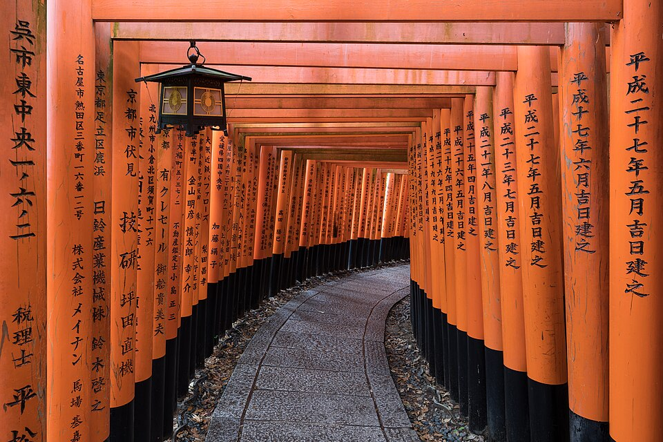
Fushimi-Inari ShrineFushimi-Inari Shrine
Thousands of vermilion torii up the mountainside. The famous dense tunnels are right at the base — stay low (knee-friendly), skip the summit hike.
▶ watch- Nishiki Market ('Kyoto's Kitchen')A 400-year, 390m covered arcade of 130+ stalls — dashimaki tamago, yuba, pickles, tako-tamago, matcha sweets. The essential Kyoto food experience.
- Pontocho AlleyLantern-lit riverside dining lane — from yakitori to kaiseki; magical at dusk, you may spot maiko.
- Kyoto unagi (Kyo Unawa / Pontocho Izumoya)Century-old grilled-eel specialists near Nishiki/the river — a Kyoto classic.
- Teramachi & Shinkyogoku arcadesCovered shopping streets off Nishiki — from old specialty stores to modern boutiques, knives, tea, crafts.
- Higashiyama / Ninenzaka lanesTraditional craft shops, ceramics, yatsuhashi sweets along the preserved stone streets.
- Takashimaya / Daimaru depachika (Shijo)Department-store food halls — beautiful edible souvenirs.
- Kiyomizu-deraThe great wooden-terrace temple above Ninenzaka — sweeping city views; busy but iconic, gentle climb.
- Gion & HanamikojiThe geisha district's wooden teahouse streets — atmospheric early evening (don't photograph geiko).
- Kennin-ji / Shoren-inQuieter Zen temples with gardens if you want calm away from the crowds.
Kyoto by day → 🎆 Tenjin Matsuri
Bamboo, the Golden Pavilion, a samurai class — then a dash to Osaka for fireworks over the river.
 Arashiyama Bamboo Forest
Arashiyama Bamboo ForestArashiyama Bamboo Forest
The luminous green tunnel — go early. The broader Arashiyama district (river, Togetsukyo bridge) is lovely too. Knee-friendly.
▶ watch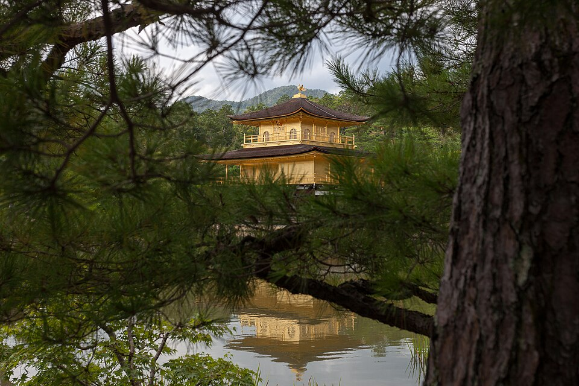
Kinkaku-ji (Golden Pavilion)Kinkaku-ji (Golden Pavilion)
A Zen temple sheathed in gold leaf, mirrored in its pond. Viewed from the garden path — flat, ~45 min.
▶ watch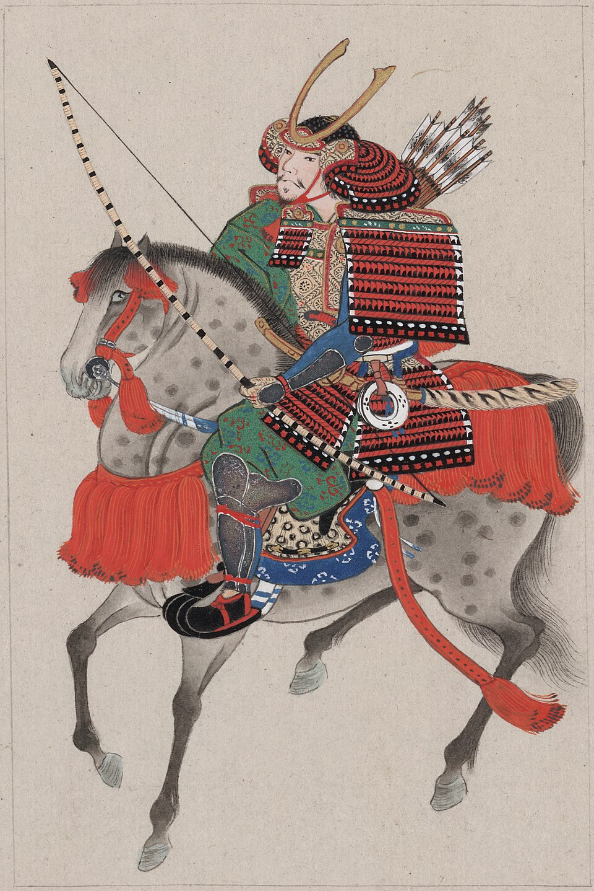
Samurai experienceSamurai experience
Dress in traditional robes and learn the art — a tour favourite. Included. Evening is free for the festival.
▶ watch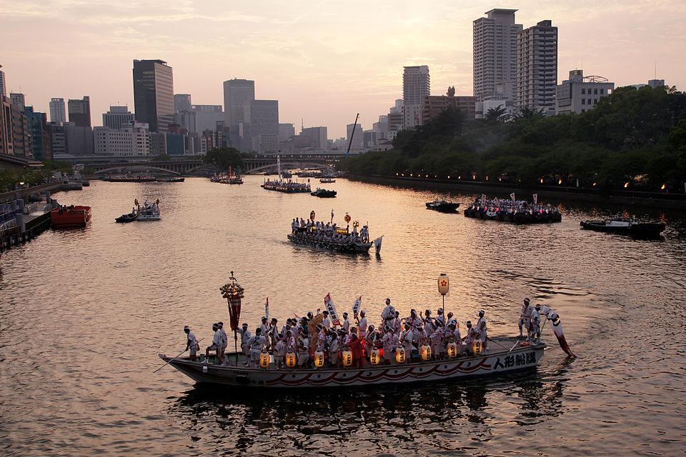
▶ watch- ~16:00Kyoto → Temmabashi on the Keihan Line. Budget 60–90 min door-to-river once you add reaching the Kyoto station and festival congestion — the Shinkansen isn’t necessarily faster after station transfers.
- ~18:00Riverbank between Temmabashi & Sakuranomiya for the boats; find a spot before fireworks.
- ~21:30The exit is the hard part. Linger 30–60 min, then walk to a farther station (Umeda) rather than fight the 1M+ crush at the nearest one.
- ~22:30Back to Kyoto. Bed — checkout + the early Hiroshima train tomorrow.
- Arashiyama tofu (yudofu) & sobaRiverside Arashiyama is famous for tofu kaiseki and soba with mountain views (e.g. Arashiyama Yoshimura for soba-with-a-view).
- Tenjin Matsuri street foodFestival stalls along the Okawa — takoyaki, yakitori, ikayaki, kakigori; eat as you watch the boats and fireworks.
- Kinkaku-ji area chayaMatcha and sweets near the Golden Pavilion.
- Arashiyama main streetYatsuhashi, crafts, Kyoto sweets, and the bamboo-themed souvenirs near Togetsukyo bridge.
- (Festival night) grab cashMost festival stalls are cash-only — Shinsaibashi/Umeda shopping is better saved for your Osaka days.
- Tenryu-ji & its gardenArashiyama's UNESCO Zen temple with a celebrated pond garden, right by the bamboo grove — flat, beautiful.
- Sagano Scenic RailwayA romantic little train through the Arashiyama gorge — lovely, no walking required.
- Monkey Park IwatayamaHilltop macaques + a city panorama — but it's a real uphill climb, so skip for the knee.
- Okochi Sanso VillaSerene garden villa at the end of the bamboo path — includes matcha, gentle.
Hiroshima → fly north
The heavyweight day: the Peace Park at your own pace, okonomiyaki, then an evening flight trades Kansai's heat for Sapporo's cool.
Early Nozomi to Hiroshima
Checkout and go — you shipped the suitcase yesterday, so it's carry-on only. Kyoto → Hiroshima 1h40 (~¥11,400); trains every ~10 min. Sleep off the festival.
▶ watch Peace Museum + Genbaku Dome
Peace Museum + Genbaku DomePeace Museum + Genbaku Dome
The museum wants 90 minutes and your full attention — solo and unhurried is the right way to meet it. Then the Dome, the Cenotaph and the Children's Monument in the park.
▶ watch Okonomiyaki lunch
Okonomiyaki lunchOkonomiyaki lunch
Hiroshima-style — layered with noodles, made on the teppan in front of you. Okonomimura's stacked floors of counters are 10 minutes from the park.
▶ watchNozomi back → Itami
Return to Shin-Osaka (~1h25), then monorail/bus to Itami by ~17:35 — over 90 minutes of buffer on the flight.
▶ watchJAL 19:15 → Sapporo
ITM → New Chitose 21:05, rapid train into the city, Susukino hotel ~22:30. First Sapporo air: 22°C. Sleep — the lavender bus comes early.
▶ watchFurano lavender & Biei — booked loop
A free Sapporo morning, then the coach south: Farm Tomita's lavender at peak, the rainbow hills, the Blue Pond, and Ningle Terrace lantern-lit at dusk.
Free Sapporo morning
Late pickup = recover from the Hiroshima+flight day. Odori Park + TV Tower (you leave from right here) or a Nijo Market seafood breakfast. Konbini/hotel breakfast.
▶ watchDepart — Odori Stn Exit 31
Coach pickup at Odori Subway Station Exit 31 (大通) — 2 min from a Susukino/Odori hotel. ~2h south to Furano; sleep on the drive.
▶ watch Farm Tomita
Farm TomitaFarm Tomita
After a Herb Garden stop (13:20): the lavender postcard of Japan — striped purple fields at literal peak bloom, lavender soft-serve, the perfume house. The one you came north for.
▶ watchRoller-coaster road + Shikisai-no-oka
The famous dead-straight rollercoaster road photo, then Shikisai-no-oka: 15 hectares of rainbow-striped flower hills — Biei's most colourful field.
▶ watch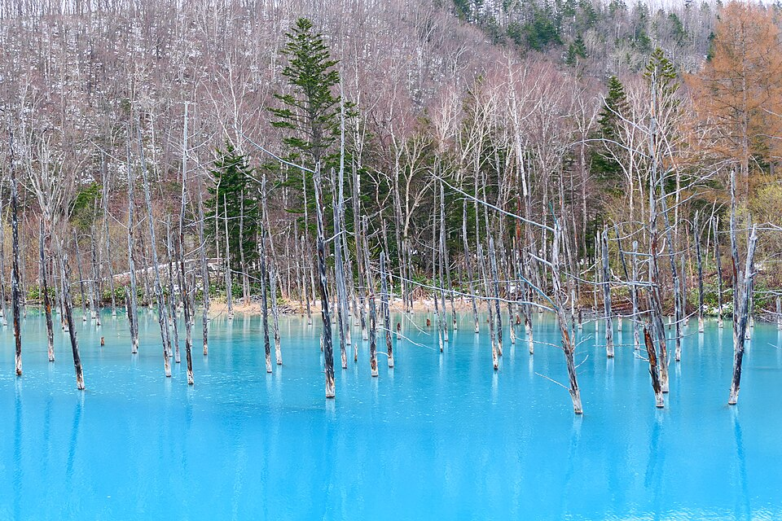
Shirogane Blue Pond + Shirahige FallsShirogane Blue Pond + Shirahige Falls
The unnaturally turquoise pond with its ghost-white trees, then the milky-blue Shirahige falls that feed it — the source of that colour.
▶ watchNingle Terrace at dusk
Timed for golden hour: a forest boardwalk of 15 lantern-lit log-cabin craft shops — candles, glass, leather — as the lights come on. Quietly magical.
▶ watch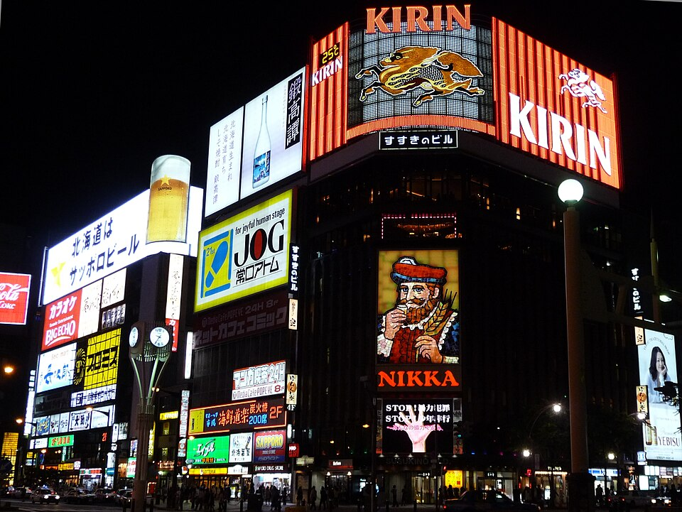
Back to Sapporo — lateBack to Sapporo — late
Return coach leaves ~21:10; back in the city ~23:00. Grab late Susukino ramen (Ramen Yokocho runs past midnight). Suitcase has arrived — repack tonight: what to ship ahead vs the day bag for the next two days (ryokan provides yukata).
▶ watchCape Kamui & Blue Cave → peel off in Otaru
The booked coach to the Shakotan blue and the Blue Cave boat — then leave the group at Otaru Port for a self-paced canal-dusk and sushi night.
Depart — Odori Stn Exit 31
Before you leave: drop the packed suitcase at the Granbell front desk to Ta-Q-Bin to the New Chitose Airport Yamato counter (arrives ~29th, you collect it there on the 30th). Then coach pickup at Odori Exit 31, ~2h up the coast — sleep on the drive.
▶ watch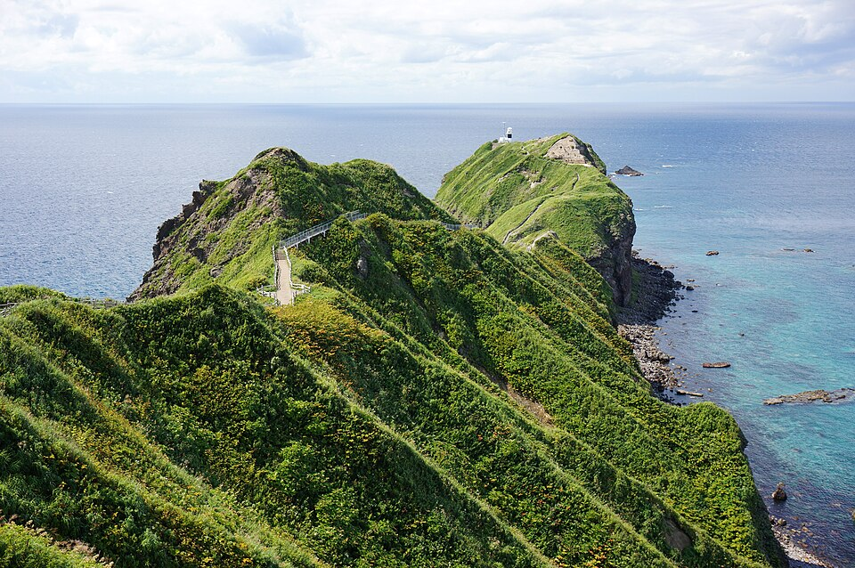
Cape KamuiCape Kamui
The Shakotan headland: a boardwalk out to the cliff tip over 300° of emerald "Shakotan blue" sea, summer wildflowers on the ridge, through the old "Women's Prohibition" tunnel. ~1h, uneven in places — go as far as the knee enjoys; the first lookout already delivers.
▶ watch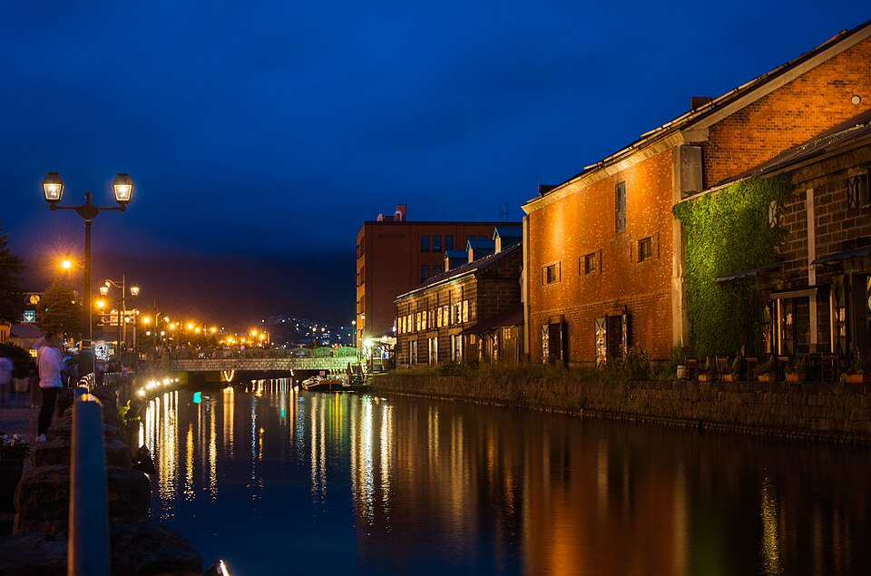
Otaru Canal (tour pass)Otaru Canal (tour pass)
A first daytime look — Asakusa Bridge, the Music Box Museum. You'll come back to this at dusk on your own, so keep it light now.
▶ watchBlue Cave boat + seagulls
The Otaru "Aoi Dōkutsu" cruise into a 30m sea cave, cobalt glow strongest on sun (weather-cancel → Shimamui Coast + ¥6,000 refund) — and the seagull-feeding chase across the water. Boat docks back at Otaru Port ~15:50.
▶ watchPeel off → Otaru your way
Tell the guide you're not returning with the group (you skip Shiroi Koibito). You're on the harbourfront, central Otaru at your feet. Sakaimachi first while shops are open: Kitaichi Glass, the steam clock + Music Box Museum, the 167-lamp Kitaichi Hall café, LeTAO cheesecake, Tanaka sake tasting (most close ~18:00).
▶ watchOtaru Canal at dusk
Sunset ~19:00 — the gaslit stone warehouses mirrored in the water, the town's real photo. Denuki Kōji food-stall alley + its little lookout tower right alongside.
▶ watchSushi dinner → JR back
Otaru is a top-3 sushi town — a counter on Sushiya-dōri (Masazushi is the name) or the canal-side Otaru Warehouse No.1 brewpub if you'd rather beer + atmosphere. JR Otaru → Sapporo (~45 min, trains till ~23:00), Susukino by ~21:45.
▶ watchHell Valley → Mt Usu → Lake Toya
The full volcano day: sulphur steam at Noboribetsu, the ropeway over Usu's crater, then the lakefront ryokan — kaiseki, rotenburo, fireworks.
Ltd exp to Noboribetsu
Sapporo → Noboribetsu ~1h10. Day bag only — the suitcase is already flying ahead to the airport. Bus up to the valley (15 min).
▶ watch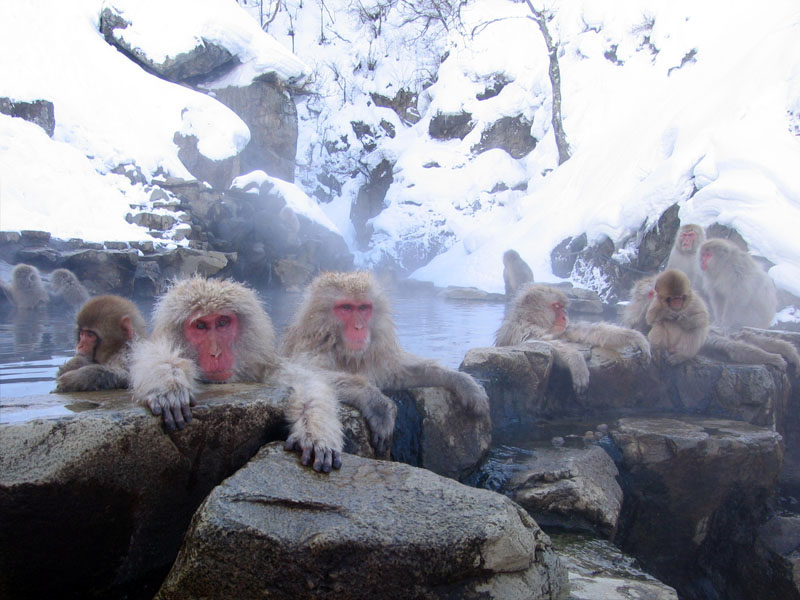
Jigokudani + ŌyunumaJigokudani + Ōyunuma
"Hell Valley" on boardwalks — steaming, sulphur-stained crater — then the forest path to Ōyunuma's natural hot-river foot bath (gentle 20–25 min each way; knee-optional).
▶ watchTrain on to Toya
45 min down the same line, ekiben lunch on board. From Toya station: bus to Tōyako Onsen (~15–20 min, ¥340), drop the day bag at Hotel Hanabi, then taxi to the ropeway.
▶ watch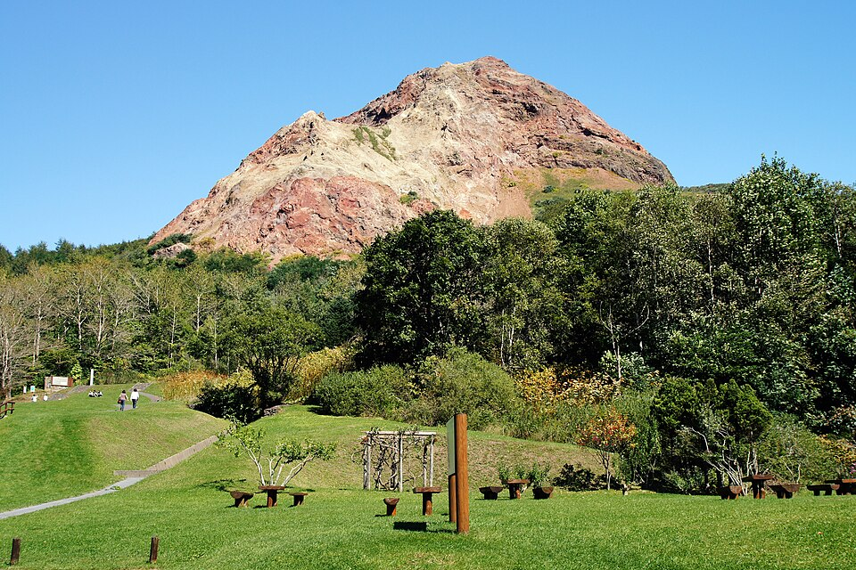
Usuzan ropeway + Showa-ShinzanUsuzan ropeway + Showa-Shinzan
Over the crater basin of the volcano that erupted in 2000, beside the lava dome that grew out of a wheat field in 1944. Boardwalk viewpoints, no hiking.
▶ watch Lakefront ryokan — kaiseki + rotenburo
Lakefront ryokan — kaiseki + rotenburoHotel Hanabi — lake-view room + rotenburo
Check in at Toya-onsen Hotel Hanabi (high-floor lake-view tatami room, 35m²), yukata on, open-air bath, then the half-board kaiseki dinner (~18:00 — set the seating at check-in).
▶ watch20:45 — fireworks from the bath
Every summer night, fireworks burst over the lake — and the lakefront rotenburo is the best seat in Hokkaido. Nowhere to be tomorrow before ~11:00.
▶ watchSlow lake morning → fly south
The trip's only unhurried morning: sunrise bath, long breakfast, a lakeside hour — then the afternoon flight back to the heat.
Rotenburo sunrise + breakfast
Lake glass-calm at dawn from the open-air bath, then the ryokan breakfast spread. This is the recovery the leg was missing — take all of it.
▶ watchLakeside hour
Checkout, one slow lap of the lakefront promenade and sculpture path — coffee facing the island. Bus/taxi to Toya station ~11:00.
▶ watchLtd exp to New Chitose
Toya → Minami-Chitose (~1h35) + one stop to the airport — CTS by ~13:30, generous margin. Bag drop (checked bag pre-booked), last Hokkaido soft-serve.
▶ watchPeach 16:15 → KIX → Namba
Lands 18:35 — free T2 shuttle to the rail station, Nankai Airport Express to Namba (~45 min, ¥970). APA Namba Ekimae Tower is right by Nankai Namba — hotel by ~19:45.
▶ watchDotonbori nightcap
Glico man, one takoyaki, early night — tomorrow is the only shopping day and it's a big one.
▶ watchOsaka finale — the full day
A whole day for the send-off: market graze, the complete shopping sweep, one last wall of neon — packed and asleep by midnight.
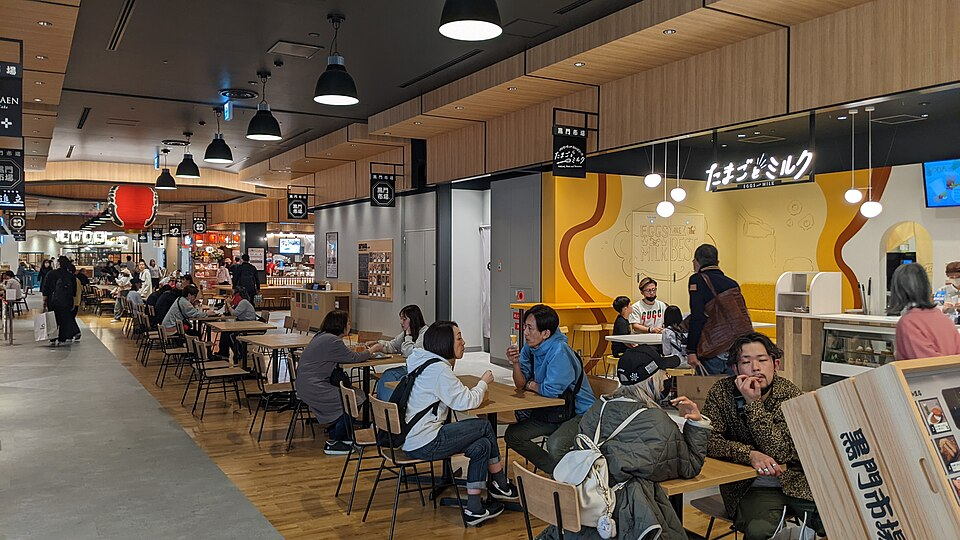
Kuromon Ichiba grazeKuromon Ichiba graze
Sleep in — you've earned it — then "Osaka's Kitchen": grilled scallops, wagyu skewers, otoro, uni. This is lunch.
▶ watch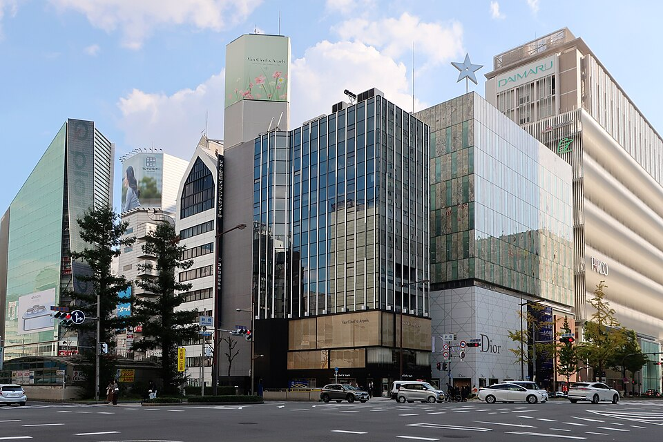
The shopping sweepThe shopping sweep
Shinsaibashi-suji arcade → Den Den Town electronics → Don Quijote gift haul. Tax-free counters need your passport; watch the luggage allowance.
▶ watch Dotonbori last night
Dotonbori last nightDotonbori last night
Glico photo, Hozen-ji's moss-covered temple in its lantern alley, one farewell drink. Pack first. Bed by midnight — 06:00 departure.
▶ watchFly home from Osaka
Pre-dawn run to KIX, and the long journey back to Mumbai via Hong Kong.
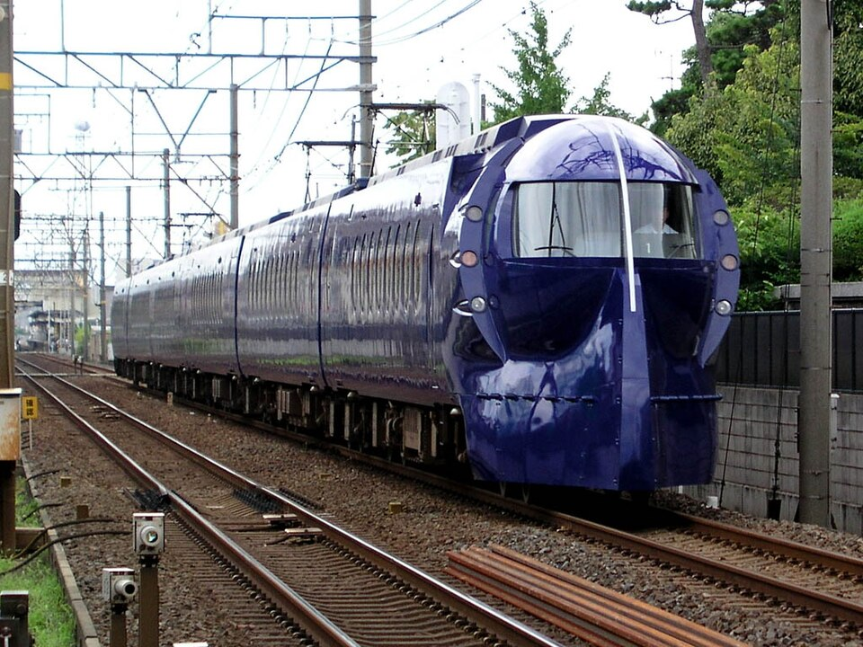
Hostel → KIXHostel → KIX
Leave pre-dawn. Nankai Rapi:t (from Namba) or JR Haruka (from Tennoji/Shin-Osaka) to KIX, ~40–50 min depending on the hostel’s location. Be at KIX by ~07:00 for the 09:05 flight.
▶ watchDepart KIX → Mumbai (via Hong Kong)
Cathay Pacific, 15h30m total, lands Mumbai 21:05. Sleep on the plane — you've earned it after the Kyushu sprint.
▶ watch